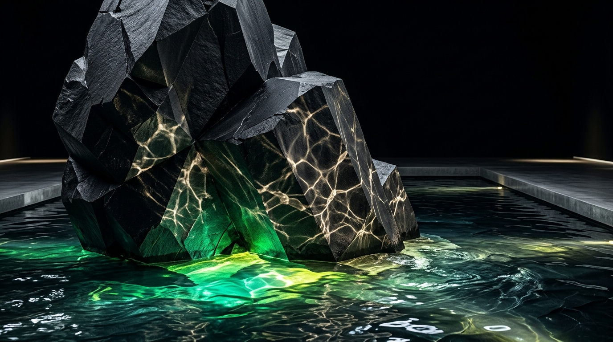
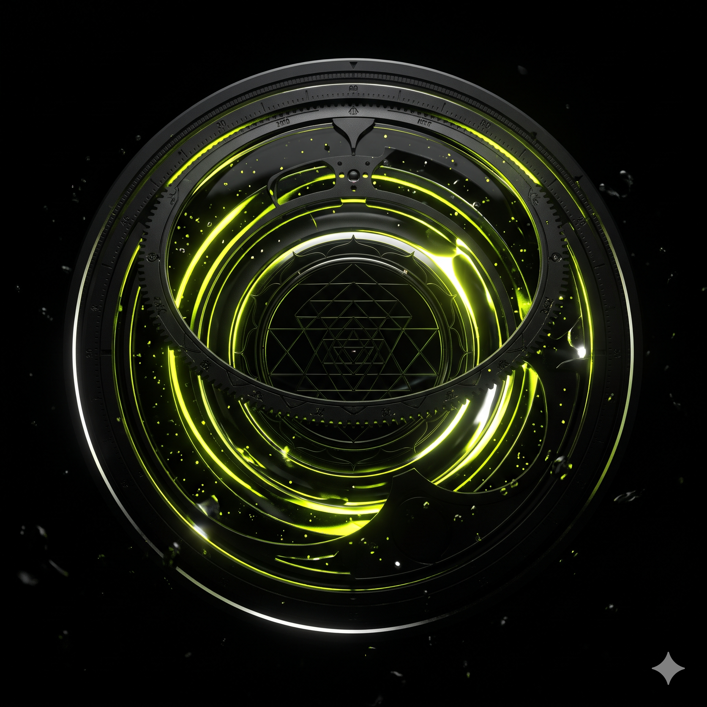
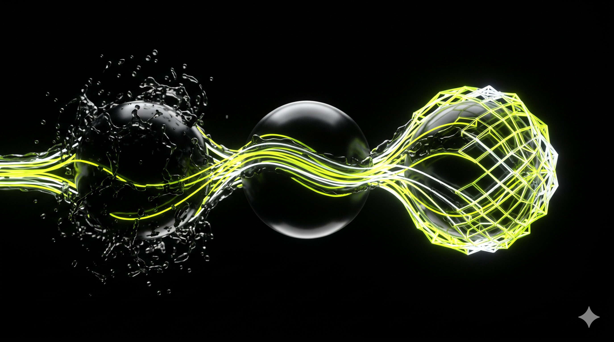

Everything Enduring
Begins as Water.
Most agencies are built around a deliverable—a logo, a website, an ad campaign. NEER is built around a law of nature. We are a 360° Brand Strategy, Creative Craft, Engineered AI, and Astro-Branding practice founded in Ahmedabad in 2011 (Know the Clan). We exist for a single purpose: to help ambitious businesses evolve their form without ever losing their essence.

The tension between immutable stone essence and adaptive water current.
Six Laws of Water That Govern
Every Brand We Build.
In Sanskrit, Neer (नीर) literally means Water. Why name a transformation firm after water? Because most companies build monuments of stone—rigid identities, static playbooks, and brittle software designed for a single market moment. When customer behaviour shifts or technology leaps forward, stone cannot bend; it fractures.
Water never fractures. It carves canyons through granite, powers turbines, and transitions across states—solid ice, flowing liquid, expansive vapor—while its molecular identity (H₂O) remains untouched. At NEER, water is our operating philosophy across six continuous dimensions:
Where Everything Begins.
Just as biological life emerged from primordial waters, every enduring company begins as an unformed current of founder conviction. Before we write code or draw a mark, we go to the source—extracting why your business deserves to exist.
The Hydro-Kinetic Monolith:
Permanence in Living Movement.
If water is our philosophy, The Hydro-Kinetic Monolith is how we practice it. Fluidity without structure is just drift; structure without fluidity is a prison. Every great enterprise requires both:
The Monolith
// Foundational Structural Truth
The unshakable core of your business—your foundational truth, your category position, your mathematical design proportions, and your ethical governance. This never wavers with temporary market fads.
Hydro-Kinetics
// Living Adaptive Current
The living current that surrounds that core—your digital interfaces, your cinema and storytelling, and your autonomous AI operations that shift with the market in real time.

Our Persona: The Sovereign Alchemist
We do not operate like a noisy advertising vendor or a cold IT outsourcing shop. NEER combines three minds at one table:
The Scholar-Strategist
Calm, incisive, and text-grounded. Combines classical Indian systems of phonetics, time, and spatial geometry (Jyotisha, Shilpa Shastra, Sankhya) with modern market category strategy to diagnose where a business is out of alignment.
The Craftsperson & Filmmaker
Obsessed with light, proportion, typography, and emotional resonance. Honed across 46+ feature films and 2,000+ brand builds (NEER Media), translating abstract strategy into cinema-grade visual authority.
The Systems Architect
Pragmatic and engineering-led. Replaces manual chaos and bloated SaaS subscriptions with deterministic LangGraph multi-agent workflows, private air-gapped models, and sovereign code owned entirely by the client.
Why Intelligence Never Arrives
in One Permanent Shape.
Long before modern business theory studied why companies stagnate, classical Indian philosophy articulated a profound metaphor for progressive adaptation: the Dashavatara—the ten successive descents of consciousness across changing epochs.

From 35mm Cinema Lenses
to Deterministic AI Code.
NEER was not born in a Silicon Valley venture incubator or an outsourced call center. We emerged from the uncompromising craft of commercial cinema and high-stakes feature film storytelling. Over fifteen years, we transformed our form while preserving our rigorous commitment to emotional truth:

The Anamorphic Era
Commercial filmmaking, national ad campaigns, and 46+ feature film productions. Mastery of lighting, human emotion, typography, and anamorphic lens optics. Learning that audiences never buy features; they surrender to compelling narrative conviction.
The Systems Era
Bridging cinema with 360° enterprise identity, tactile packaging architecture (Soil Story), and industrial IoT branding (AXIS Solution). Developing Vedic Astro-Branding diagnostics via Reva Astro to harmonize founder temperament with market timing.
The Autonomous Era
Engineering deterministic multi-agent workflows, private air-gapped RAG pipelines, and sub-50ms web flagships. Translating water's frictionless flow into automated operational intelligence that compounds enterprise value without human bottlenecks.
Know the Clan:
Guardians of the Current.
NEER is steered by seasoned practitioners with deep roots across Indian cinema, Vedic scholarship, and enterprise software architecture. We do not delegate leadership to junior account managers.
Explore Full Clan Credentials
Read verified bios, filmography credits, and academic publications of our founders and technical directors at the official studio clan archive.
Ready to Evolve Your Form
Without Losing Your Essence?
Whether your venture requires foundational Astro-Branding diagnostics, high-performance cinema and web flagships, or sovereign AI automation—our executive partners are ready for dialogue.